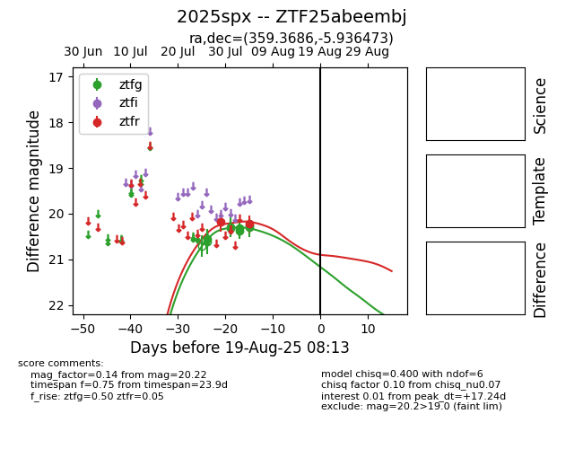

Target 2025spx at 2025-08-19 09:59, see:
FINK: fink-portal.org/ZTF25abeembj
Lasair: lasair-ztf.lsst.ac.uk/objects/ZTF25abeembj
ALeRCE: alerce.online/object/ZTF25abeembj
TNS: wis-tns.org/object/2025spx
YSE: ziggy.ucolick.org/yse/transient_detail/2025spx
alt names
ZTF25abeembj (ztf,fink)
2025spx (tns,yse)
coordinates:
equatorial (ra, dec) = (359.3686,-5.93647)
galactic (l, b) = (89.3113,-65.22356)
photometry
last ztfg=20.26, ztfr=20.22
7 ztfg, 2 ztfr detections
